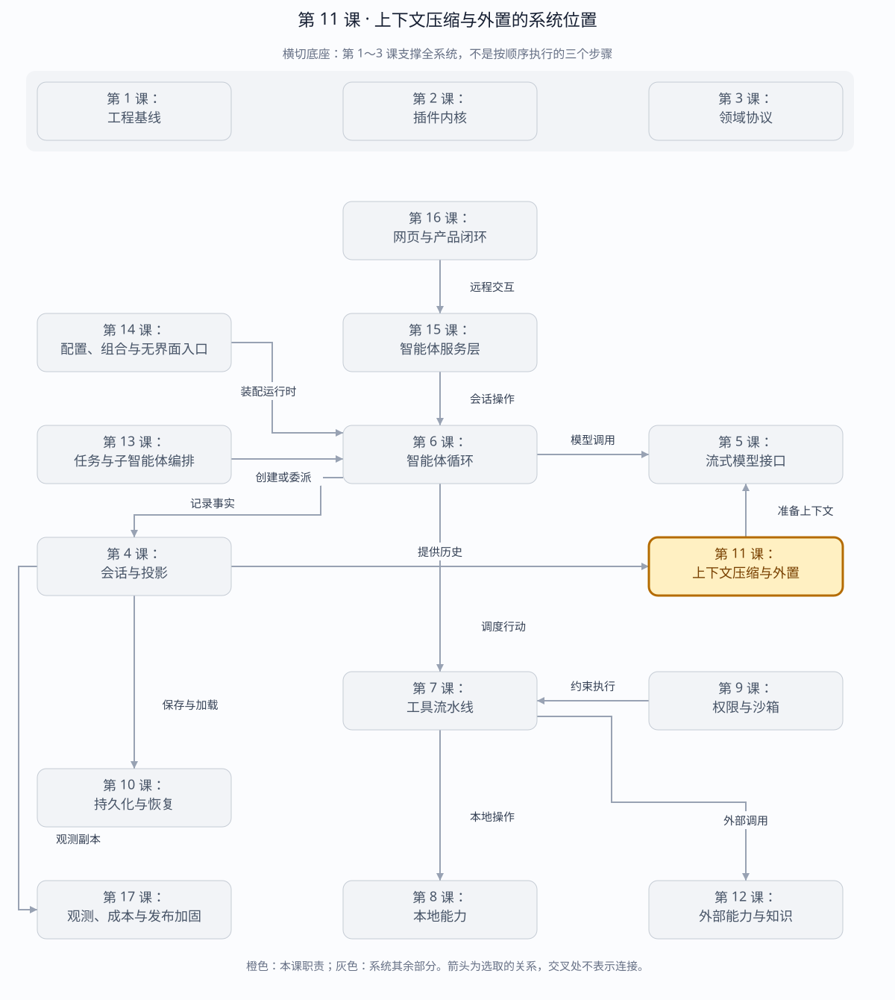

第 11 课：Token、Surface、Compaction 与 Spill
长会话治理的核心不是删日志，而是保留事实、缩小模型可见 surface，并把大字节移到受控文件中。
章节概览（可选）：三框架职责摘要
本章对比：DeepSeek Harness / DeepAgents / OpenHands
口径：DeepSeek 依据本地原仓库（99f6f02fecdb），不是 harness-lab；deepagent 按 LangChain DeepAgents 理解；OpenHands 对比当前 Software Agent SDK，不混用旧 V0。在线资料核对于 2026-08-28，描述文档能力，不代表已在本实验室安装或测试。没有依据的同名能力不强行等同。
三者的关键区别：要分别检查“模型少看了什么”和“原文还在哪里”；只比较摘要算法会漏掉耐久性与可追溯性。（基于上述依据的归纳）
本章在全系统中的位置
位于会话历史与模型请求之间，同时把过大内容转移到可检索存储。
下面是本课程的概念地图，不是某框架的逐包调用图，也不表示实验室已默认装配全部能力。三套框架的实际对应关系见上方横向对比表。
全系统定位 · 橙色高亮第 11 课
打开大图 · Mermaid 图源
| 上游与输入 | 增长的历史、工具大结果、模型窗口压力。 |
|---|
| 下游与输出 | 更小的模型可见视图、摘要和可再读取的内容引用。 |
|---|
| 不归本章负责 | 减小模型上下文不等于删除权威历史；外置引用必须有明确的保存与访问周期。 |
|---|
| 放进具体场景 | 测试输出上万行，模型先看摘要与文件引用，需要某条错误时再读原文，而不是每步重发全部输出。 |
|---|
接着看下方「可视化图解」：局部模块图解释职责，时序图解释一次调用，分支图解释异常与边界。
本课导览
| 包含内容 | 词元计量、上下文压力、模型可见面、摘要压缩、工具结果裁剪和大内容溢出。 |
|---|
| 涉及模块 | TokenMeter、上下文投影、Compactor、工具裁剪器、SpillStore。 |
|---|
| 白话解释 | 完整账本继续保留，只给模型看一份更短的工作摘要；太大的内容移到文件中按需读取。 |
|---|
| 解决的问题 | 防止长会话超过模型窗口或耗尽内存，同时保留审计、恢复和成本重算所需的原始事实。 |
|---|
点击下面的概念名称，可直达该概念的三框架实现、区别与依据。原有能力清单、示例和验收描述面向 harness-lab 教学实现；不要将其直接当作上游框架能力声明。
完整能力清单
| 能力 | 具体覆盖 | 不变量 |
|---|
| 词元估算 | 估算文本、消息及各种内容块大小，单独统计模型可见面。 | 估算值不冒充提供方实际计费。 |
| 实际用量 | 累计提供方上报的输入、输出和缓存桶，作为历史用量事实。 | 压缩不能修改历史用量。 |
| 上下文压力 | 用最近实际提示词用量作为锚点，再叠加可见面变化预测下一请求。 | 压力值用于窗口决策，不作为新增账单。 |
| 压缩区间选择 | 选择已闭合的旧内容，避开仍活跃区域和不可拆分边界。 | 工具调用与对应结果必须作为原子组。 |
| 摘要事务 | 先写压缩开始，生成摘要，验证确实变小，再写可见面替换和结束。 | 失败只留闭合审计，不改变模型可见面。 |
| 连续再压缩 | 新摘要可替换旧摘要，形成能从事实日志重放的压缩链。 | 原始事件永远保留。 |
| 工具结果裁剪 | 模型侧仅保留必要前缀和溢出引用，完整内容交给受控存储。 | 展示截断与数据丢失明确区分。 |
| 溢出存储 | 大文本写入随机私有文件，引用保存长度与摘要，读取时校验完整性。 | 引用不能允许路径注入或内容替换。 |
主概念深挖：事实保留与模型视图压缩
上下文治理的上游是 Session 事实日志和实际用量，下游是下一次模型请求：上游历史保持完整，下游模型只接收预算内的有效视图。
Session events + provider usage（输入）
│
▼
TokenMeter ─► ContextPressure ─► 是否压缩？
│ 是
▼
Range Selector ─► Summarizer ─► Surface replace（输出）
│ │
└─ 保证 tool call/result 原子 └─ 下一次 LLM 请求
大工具输出 ─► SpillStore ─► 短引用进入 Surface
| 背景与目的 | 长会话会同时撞上模型窗口、请求成本和内存上限；直接删历史虽然变短，却破坏恢复和审计。 |
|---|
| 输入与输出 | 输入是事实事件、模型可见面、实际用量和窗口预算；输出是压力估计、摘要替换事件及大内容引用。 |
|---|
| 适用场景 | 长时间编码会话、超大测试日志、重复压缩、接近上下文窗口上限时。 |
|---|
| 底层组件 | 内容估算器、实际用量锚点、可压缩区间选择器、摘要器、事务事件、内容寻址溢出存储。 |
|---|
| 核心逻辑 | 用最近实际提示词用量校准估算；只选择闭合原子区间；摘要确实更小时才提交 Surface 替换；完整字节仍留在日志或 SpillStore。 |
|---|
| 权衡 | 摘要降低窗口压力但会损失细节且消耗一次模型调用；保留事实使系统可回溯，却增加本地存储。 |
|---|
| 方案对比 | 滑动窗口简单但会切断工具因果链；全量摘要容易漂移；事务式区间摘要更复杂，却能保留边界并允许失败回滚。 |
|---|
场景穷举
上下文压力评估
├─ 预算充足 → 保持原 Surface
├─ 轻度超压 → 裁剪超大工具结果
├─ 历史可闭合 → 摘要旧区间并 replace
├─ tool call/result 横跨边界 → 扩展或放弃区间
├─ 摘要失败/不够小 → 审计闭合，不替换
├─ 已有旧摘要 → 允许再压缩
└─ 大原文 → SpillStore，Surface 只留引用
| 场景 | 策略 | 保留内容 |
|---|
| 短会话 | 不压缩。 | 完整事实和完整 Surface。 |
| 单个巨大工具结果 | 优先 spill/裁剪。 | 前缀、长度、摘要和完整文件。 |
| 多轮旧历史 | 选择闭合区间摘要。 | 事实事件+摘要替换事件。 |
| 摘要器异常 | 记录失败结束。 | 原 Surface 原样继续。 |
| 摘要失真 | 框架只能验证大小和边界，语义质量需评估。 | 保留原事实以便回看或重做。 |
| 窗口仍超限 | 继续压缩、选择更大模型或拒绝请求。 | 不能静默切掉未闭合因果链。 |
多方案对比
| 策略 | 细节保真 | 成本 | 主要风险 |
|---|
| 滑动窗口 | 近期高、早期为零。 | 最低。 | 切断长期约束和工具因果。 |
| 全量摘要 | 取决于摘要质量。 | 每次较高。 | 反复摘要漂移。 |
| 区间事务摘要 | 近期原文+旧区间摘要。 | 中。 | 区间选择和边界实现复杂。 |
| 检索式记忆 | 按查询召回。 | 索引和检索成本。 | 召回遗漏；不能替代审计日志。 |
| 更大上下文模型 | 最高。 | 价格和延迟更高。 | 窗口最终仍有限。 |
关键设计反问
- 为什么 projectedTokens 不能用于计费？
- 它是本地估算和锚点差值，不是提供方实际处理量；账单只能从 provider usage 派生。
- 为什么摘要事件也必须写入日志？
- 否则无法解释某次模型请求看到了什么，也无法冷重放连续压缩链。
- Spill 是压缩吗？
- 不是。Spill 只移动字节存放位置；如果引用仍代表全部内容，语义未压缩。工具裁剪才改变模型可见信息量。
先拆开四个量
| 量 | 来源 | 用途 | 是否可计费 |
|---|
| 累计 TokenUsage | Session 中 provider usage 事件 | 历史统计、成本派生 | 可以，但需要带版本的价格表 |
| pressureTokens | 最近一次 provider prompt usage | 实测上下文锚点 | 不是新增账单 |
| projectedTokens | 锚点 + surface 估算变化 | 预测下一请求是否超窗 | 不可以 |
| contextWindow | 路由模型能力 | 容量分母 | 不可以 |
更直白地理解
| 量 | 一句话解释 | 具体例子 |
|---|
| 累计 TokenUsage | 这次会话已经实际花掉多少 Token | 累计输入 8,000、输出 2,000；这是计算实际费用的依据 |
| pressureTokens | 上一次模型请求实际有多大 | 上次请求输入了 12,000 Token，便以 12,000 作为当前实测起点 |
| projectedTokens | 预计下一次模型请求会有多大 | 实测起点 12,000，加上新消息和工具结果约 3,000，预计为 15,000 |
| contextWindow | 模型一次最多能装多少 Token | 模型上限是 64,000；预计用量接近该值时就应压缩上下文 |
累计 TokenUsage：已经实际花掉多少
pressureTokens： 上次请求实际有多大
projectedTokens： 预计下次请求会有多大
contextWindow： 模型最多能装多少
projectedTokens 接近或超过 contextWindow
→ 触发摘要、裁剪工具结果或移除旧消息
费用只根据实际 TokenUsage 计算，不能根据预测值计算。
Cost 存哪里？本实验与 DeepSeek Harness 都把原始 usage 放在 Session Event，投影可重建累计桶。货币 cost 应由 provider/model + usage + 生效时间/价格表版本 派生；OTel 可复制指标做观测，但不是恢复或账单事实源。
词元估算：三框架分别怎么做？
同一个问题：本地估算如何影响上下文，而不是账单？
这个概念的区别：先确认度量单位：估算 token、模型窗口比例、事件数量不能直接比较数值。
实际用量：三框架分别怎么做？
同一个问题：谁提供计费用量，哪些桶不能重复相加？
这个概念的区别：账单依据模型回报及其归一化语义，不能拿压缩后视图大小替代历史实际消耗。
上下文压力：三框架分别怎么做？
同一个问题：什么时候启动治理，用哪份容量？
这个概念的区别：比较的不只是阈值，还要区分主动治理与提供方拒绝请求后的补救路径。
事实日志与模型 Surface
append user(seq=0) ─┐
append assistant(1) ├─ 原始 Session Event 永久保留
append user(seq=2) ─┘
compaction/start(3)
compaction/summary(4, shadowedTokens)
user summary(seq=5, surfaceOp=replace 0..1)
compaction/end(6)
当前 surface: [5, 2]
原始 log: [0, 1, 2, 3, 4, 5, 6]
恢复时重放 surfaceOp 即可得到相同模型输入；二次压缩还能替换 seq=5 与后续节点。摘要失败只闭合 start/end 审计 bracket，不产生 replacement。
压缩区间选择：三框架分别怎么做？
同一个问题：摘要哪些历史，如何避免割裂工具调用？
这个概念的区别：DeepSeek 的表层单元、DeepAgents 的消息历史、OpenHands 的事件视图，各自决定合法切分边界。
压缩事务的不变量
- 在异步摘要前冻结选区及 token 价格。
- 不能切开 assistant tool-call 与对应 tool-result。
- 摘要期间选区发生变化则拒绝提交。
- 摘要估算 token 必须小于被遮蔽内容。
- 先记录 shadow price，再同步提交 replacement。
- 任何失败都不改变当前 surface。
摘要事务：三框架分别怎么做？
同一个问题：摘要失败后是否已经破坏原历史？
这个概念的区别：“生成摘要”与“让摘要成为下一次请求的事实”是两个边界，三者提交方式并不相同。
连续再压缩：三框架分别怎么做？
同一个问题：已经有摘要，后续又满了怎么办？
这个概念的区别：重复摘要可能累积信息损失；“还能运行”不是“原始细节仍完整进入模型”。
超大工具输出与用户附件有什么区别
Spill 就是“超大内容落盘”。当命令输出、测试日志或工具返回文本太大时，系统不会把完整内容一直放在内存、会话日志或模型上下文中，而是把它写入本地受保护文件。模型只看到内容摘要、总字节数、文件引用和分段读取方法，需要时再按范围读取。
工具产生 20 MB 测试日志
→ 完整日志写入本地受保护文件
→ 模型只看到前几行、总大小和文件引用
→ 模型需要更多内容时再分段读取
| 机制 | 对象 | 模型看到 |
|---|
| 超大内容落盘（Spill） | 过大的命令输出、测试日志或工具返回文本 | 内容摘要、总字节数、文件引用和分段读取方法 |
| 用户附件（Attachment） | 用户上传的图片、PDF 等不可变文件 | 附件标识、文件类型、大小等信息 |
本地超大内容落盘使用会话哈希目录和随机文件名，避免不同会话互相读取或猜测文件路径。目录权限 0700 表示只有当前用户可以访问；文件权限 0600 表示只有当前用户可以读写。实验版还会记录 SHA-256，并在读取时检查文件是否损坏或被修改。
工具结果裁剪：三框架分别怎么做？
同一个问题：删减模型可见内容，与搬走字节有什么区别？
这个概念的区别：无模型裁剪、外置后按需读取、跨事件摘要是不同机制，不应统一称作“截断”。
溢出存储：三框架分别怎么做？
同一个问题：原文放在哪里，恢复后引用是否还有效？
这个概念的区别：内容引用不是耐久保证；要同时检查存储后端、读取权限和清理时机。
运行与调试
cd harness-lab
bun run demo:context
VS Code F5 → 10 · 上下文压缩
# 推荐断点
# projectContextPressure：provider 锚点与 surface delta
# deriveSurface：append/replace 重放
# selectCompactableRange：保留尾部与工具原子边界
# compactRange：summary → stability check → replacement
# LocalSpillStore.saveText/readText：权限与完整性边界
本阶段验收
下面把测试名称中的技术说法和实际验证内容对应起来：
| 技术说法 | 白话解释 |
|---|
| pressure 分桶 | 实际 Token 用量和下一次请求的预计用量分开统计，不会算混。 |
| 工具原子边界 | 压缩历史时，工具调用和对应的工具结果必须一起保留，不能只留下其中一半。 |
| replacement 冷重放 | 程序完全重启后，只读取持久化日志也能恢复出压缩后的模型上下文。 |
| 链式替换 | 已经生成的旧摘要以后还可以再次压缩成更精简的新摘要。 |
| 压缩后压力下降 | 压缩完成后，预计下一次发送给模型的 Token 数确实减少了。 |
| 摘要失败拒绝 | 摘要生成失败时，不修改原来的上下文。 |
| 摘要不缩小拒绝 | 如果摘要和原文一样大甚至更大，就不采用这个摘要。 |
| spill 路径隔离 | 超大内容按会话分别落盘，一个会话不能读取另一个会话的文件。 |
| 篡改检测 | 读取落盘文件时检查校验值，文件损坏或被修改后会被发现并拒绝使用。 |
源码
下一课接入 Skills、MCP、Web、LSP 与 Attachment，把外部能力统一成可发现、可授权、可观测的 capability。
返回完整路线 →